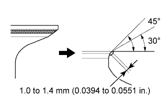
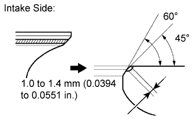
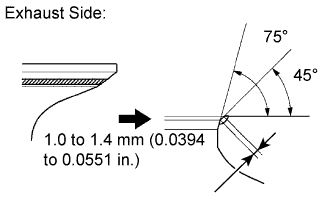
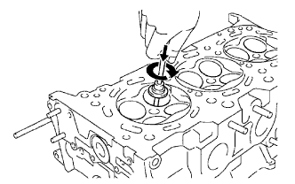

CYLINDER HEAD > REPAIR |
| 1. REPAIR VALVE SPRING SEAT |
 |
If the seating is too high to the valve face, use 30° and 45° cutters to correct the seat.
 |
Intake Side:
If the seating is too low to the valve face, use 60° and 45° cutters to correct the seat.
 |
Exhaust Side:
If the seating is too low to the valve face, use 75° and 45° cutters to correct the seat.
 |
Hand-lap the valve and valve seat with an abrasive compound.
After lapping the valve by hand, clean the valve and valve seat.